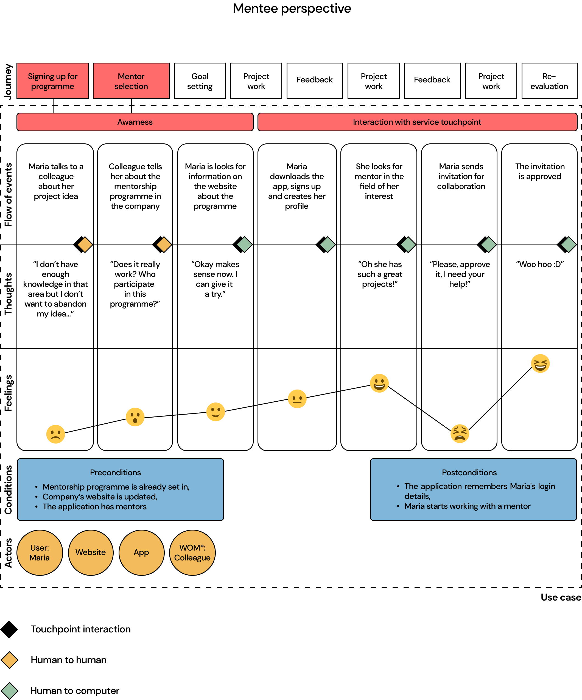

Mentorship Journey
The development of our service focused primarily on the needs of each of us. Coming to a new workplace for the first time, how did you feel? Lost? In a place unfamiliar to you, a new place? Or, getting a new project and wanting to give it your best shot, did you know that you lacked enough knowledge to make it as innovative as you would like it to be? The answer to these questions, we created a mentoring program that would facilitate people to work on their side projects under the innovative 20% model. The entire process of arriving at this solution and its exact implementation is outlined down below. Due to the signed NDA, the project cannot be fully disclosed here. Furthermore, the name of the company we had the pleasure of working with will also not be mentioned here. Nevertheless, some elements and the methodology used in the development will be presented.
The brief:
Design a service that will leverage the 20% model for the benefit of both employees and the company.
Year:
2023
Theme:
Service System Design, proposed service
Discover
Define
Survey
The first step was to play the role of canteen customers. So we queued up to buy lunch and understand more precisely what problems we would encounter in doing so. Additionally, we did a couple of unstructured interviews to gather the largest possible pool of potential pain points. One of the main problems we learned about during the interviews was that some students wanted to eat after class, but the canteen is not open that long.
How might we?
We formed HMW questions focusing on communication, mentorship, and knowledge-sharing, amongst others. Valuable feedback, especially from the representative of company we worked with, during one of the presentation at the forum, lead us to the the importance of mentorship. Our academic research and survey results backed this up, leading us to choose this particular direction.
Develop
Workshop facilitation
The purpose of this workshop was to understand the dynamics between a mentor and a mentee, in addition to analysing a collage which represented “guidance”, created by each participant. We did this by getting participants to simulate the role of mentor and mentee for a particular task, which was the creation of the collage.
Interviews
To further expand on the theme of ’mentorship’ and grasp the nuances of mentee-mentor relationships, we needed to gather different opinions from two perspectives: mentor and mentee. We decided the best way to do this would be to conduct semi-structured interviews of mentees and mentors within our own network.
“It’s a process that evolves over time and the more time you spend together in the mentor-mentee sort of relationship, the more like streamlined and optimised this whole interaction becomes.”
“I also expect to learn from them, and I really much [sic] enjoy when this is happening. Different ways of looking at things, perspectives, points of view. I really enjoy when they made me see things in another in a different way that I didn’t even imagine.”
User journey
As part of our service, we decided to present a specific touchpoint that would most fully represent the premise of the service itself. In addition, we included elements in the user journey such as familiarising the user with the service, rather than just using it.
Deliver
Stakeholders map
We have placed the direct users of our service concept in the inner circle - the R&D department, which will initially use the 20% model. The aim is for the model to eventually extend to other departments, so scalability is crucial. Upper and middle management have been placed in the second circle due to less continuous interaction. These stakeholders could certainly control the scalability of the system, its implementation and results. External investors, who could influence the system by withdrawing their shares or increasing them, were placed in the outermost circle of our stakeholder map.
Service blueprint- Mentor selection
We decided to use the service blueprint to zoom in on one specific touchpoint within the customer journey. Due to the complexity of our service, certainly more blueprints would be needed. Nevertheless, in the one below we have decided to detail the exact interaction with the application.
The project was developed in collaboration with
Janhvi Sampat, Sara Werge and Nawal Boulil